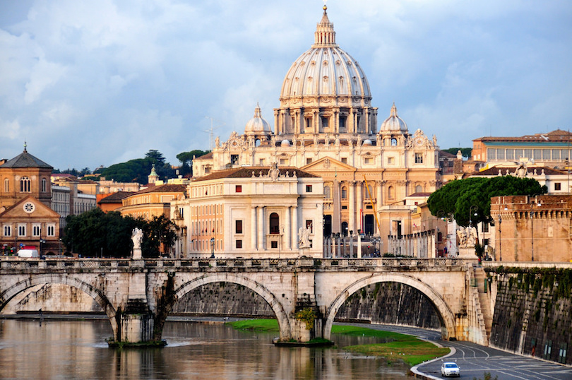
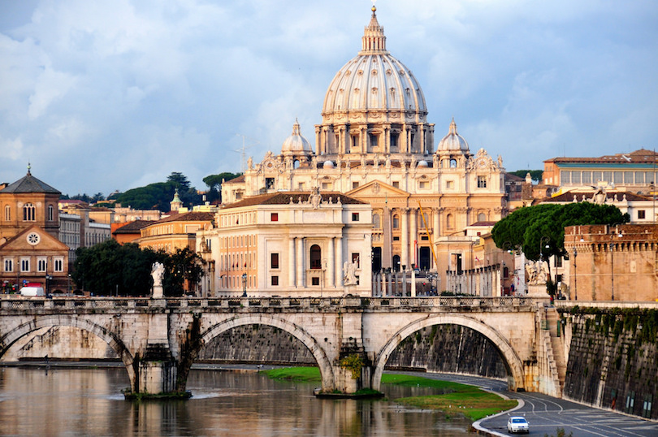

Paris
City Of Love
As the capital city of France, Paris has suffered as a significant city for over 2,000 years. Frequently called by epithets like the "city of adoration" and "city of lights," Paris is today one of the world's driving places for business, style, stimulation, craftsmanship and culture. Simply the insignificant notice of Paris invokes pictures of the city's reality well-known tourist spots, exhibition halls and houses of God. Likewise called the Capital of Fashion, Paris is home to a portion of the world's best architect names including Yves Saint-Laurent, Lancôme, L'Oréal and Christian Dior. The city's shopping scene ranges from strip malls to outdoors markets, boutiques and swap meets. A diagram of the top vacation spots in Paris:
 Place des Vosges
Place des Vosges
Place des Vosges, 75004 Paris, France
 Eiffel Tower
Eiffel Tower
Champ de Mars, 5 Avenue Anatole France, 75007 Paris
Place du Panthéon, 75005 Paris, France
 Louvre Museum
Louvre Museum
Rue de Rivoli, 75001 Paris, France
Rome
The Eternal City
Rome is the capital of Italy and one of the most visited cities in the world. Rome played a significant role in World History. Before you’ll visiting this city, it’s important to know what are the things that made Rome such a famous city. What is Rome Known For? Rome is known for its stunning architecture, with the Colleseum, Pantheon, and Trevi Fountain as the main attractions. It was the center of the Roman Empire that ruled the European Continent for several ages. And, you’ll find the smallest country in the world in Rome; Vatican City. There’s a lot more to learn about Rome. A diagram of the top vacation spots in Rome:
 The Colloseum
The Colloseum
Piazza del Colosseo, 1, 00184 Roma RM, Italy
Piazza San Pietro, 00120 Città del Vaticano, Vatican City
Via della Salara Vecchia, 5/6, 00186 Roma RM, Italy
Piazza di S. Giovanni in Laterano, 4, 00184 Roma RM, Italy
Tokyo
Ultramodern and Traditional City
Tokyo has been a well-traveled destination for decades. Cherry blossoms, Mt. Fuji, and sushi grace the postcards and photographs. This thriving, colorful city is famous for many more reasons than one. Tokyo boasts so many noteworthy attractions that it can be difficult to know what it was famous for first. If you plan on visiting this famous city.Here's a diagram of the top vacation spots in Tokyo:
Nezu Shrine
1 Chome-28-9 Nezu, Bunkyo City, Tokyo 113-0031, Japan
The Sensō-ji Temple
2 Chome-3-1 Asakusa, Taito, Tokyo 111-0032
 Japan Tokyo Skytree
Japan Tokyo Skytree
1 Chome-1-2 Oshiage, Sumida, Tokyo 131-0045
 Ueno Park Zoo
Ueno Park Zoo
9-83, Ueno Park, Tokyo, Kanto 110-8711
New York
City that Never Sleeps
One of the greatest cities in the world, New York is always a whirlwind of activity, with famous sites at every turn and never enough time to see them all. Some people come here to enjoy the Broadway shows; others come specifically to shop and dine; and many come simply to see the sites: the Statue of Liberty, Empire State Building, Brooklyn Bridge, Central Park, historic neighborhoods, and numerous world famous museums. Many of the best places to visit in New York are within walking distance of each other, or just a short ride away, making this city a delight for sightseeing. A diagram of the top vacation spots in New York:
 Statue of Liberty
Statue of Liberty
New York, NY 10004, United States
New York Time Square
Broadway and 7th Avenue, New York, New York
 Brooklyn Bridge
Brooklyn Bridge
Brooklyn Bridge, New York, NY 10038, United States
Between W 40th Street and W 42nd Street, at 6th Ave, New York, New York
London
The Great Wen City
London is one of the planet's greatest concentrations of cultural attractions. From royal palaces to the people's parliament, from museums and cathedrals to riding a giant Ferris wheel for breathtaking views over the River Thames, you could spend endless days exploring London's best sightseeing locations without ever running out of unique things to see and do. And, as an added bonus, many of the best places to visit are free. A diagram of the top vacation spots in London:
 Big Ben and Parliament
Big Ben and Parliament
Westminster, London SW1A 0AA, United Kingdom
 The British Museum
The British Museum
Great Russell Street, Bloomsbury, London
32 London Bridge Street, London
Trafalgar Square, Charing Cross, London